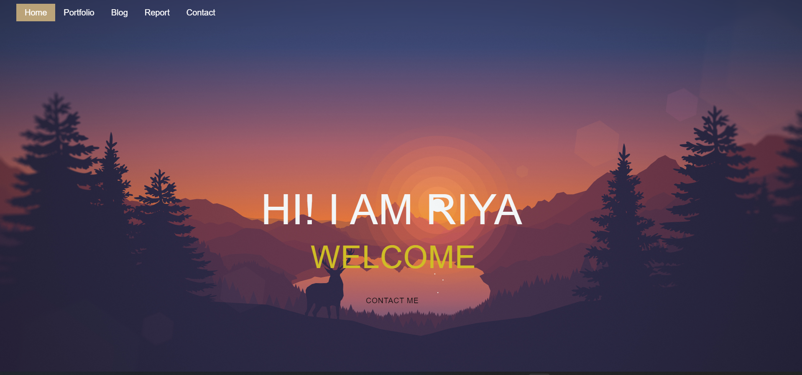

REPORT
A reflective discussion on my module experience
Abstract :
This report outlines all the actions I did to create this website, as well as the mistakes I made. I sourced a lot of my references for this website from websites like w3 and Youtube. Through online research and watching lessons on YouTube, I discovered a lot of fresh information about the creation of websites. The majority of the coding that I didn't know came from Google sites like w3 geeks for geeks and lessons on youtube. After my assignment has been evaluated, I hope to further cut down on my errors and improve my web programming abilities.The homepage (index.html), which serves as the website's introduction, and the style page (styles.css), where all subsequent pages and subpages would be formatted, served as the starting points for the website's creation.
This report details every step involved in building the html and CSS pages and subpages. This assignment was designed to test our proficiency in using GitHub to manage our code and to construct a responsive website that can function on both desktop computers and mobile devices. Understanding how to do this will enable us to build a website that will help us reach the largest possible audience. I began my assignment by first developing the fundamental home page and CSS. I began creating and designing the home page with html(index.html) and styling with css(style.css). I had to go through a lengthy, step-by-step procedure to style the home page using CSS because I wasn't sure how I wanted it to look.
1. Creating the hamburger menu and the Home page :
Before creating the home page the menu bar was first created inside the header the menu bar is located at the top of the webpage and contains menu-items i.e subpages like: index.html which is the homepage, contact.htm, report.html, portfolio.html and blog.html. The menu-items are later linked wih their subsequent webpages so that when clicked on it it would link the user straight to that subpage.Since the home page should be accessible from other webpages and vice versa the hamburger menu was then created. A hamburger icon and navbar is then added so that when the browser is minimized or the website is uded in a mobile it can still be functional and responsive. To create the hamburger menu first div class container and wrapper were added then below the nav class navbar was added inside where the menu would be. Division class hamburger menu had three div class lines and the nav list contained the names of the subpages. When the browser shrinks the menu bar at the top of the webpage also shrinks into a hamburger icon and when the hamburger icon is clicked a navbar appears covering the screen .It consists of all the menu-items and when you hover above the menu item the color changes. I also made the menubar at the top of the webpage transparent. The hamburger is functional wit te help of javascript(main.js). After this process the home page is created.Java script (script.js) was used to create the retractable effect of change after clicking the animated hamburger icon which was created by styling change and div class line (1, 2 and 3).
While creating the homepage the basic html code was first written and was linked to the stylesheet or the style page so that the homepage could be styled later on. The background image was then selected from google at the website unsplash.com where free images are available. In the middle of the home page a welcome text (Hi! I am riya) below the dic class head and below that inside the div welcom e-text a dynamic text (WELCOME TO MY WEB SITE) was added .I made this text so that it would disappear automatically when hovered above it. I made the dynamic text so that it automatically start to generate and disappear. Creating the animated hamburger was the most cumbersome process of the whole website.The font for the website was added from google fonts. The styling was done in styles.css where the image was added to the div parallax1, the width and the height of the navbar was selected along with the transition and position,and the background of the navbar to be dark grey. To make the webpage responsive @media (max-width: 1023px) for tablets and @media (max-width: 767px) was used for mobile phones. The index page was then validated at w3c markup validation service .
index.html :
Style.css :
Javascript : Java script (main.js) was used for the hamburger menu and navbar.
Result :

Validation : After the styling of index.html it was then validated at w3c markup validation service.

2. Creating subpages:
After the home page subsiquent sunpages were created:
a. Blog
For blog page a header_B div was first created which contains a wide dummy image inside it and the title of the blog at the centre of the image at the top of the webpage .At the middle section of the webpage irregular columns are used to divide the webpage into two sides (the left side which contains the articles and the right side which contains boxes like "about me," "popular articles," and "follow me" box that contain social media icons) and Finally, a footer is added at the bottom of the blog.
blog.html :
styles.css :
Results :
Validation :

b. Portfolio
For portfolio div class image grids were first made where placeholders or dummy images were placed inside the webpage using grid.After that the title was written at the top of the webpage and a grid consisting of with six boxes was created. Next, sliders were added on top of the grid box, which will hold images for any future projects. The text for the image's title and description can be written inside the slider, but for now, I added dummy images inside the boxes that were produced by the site's dummy image generator. The images were added to div class “image-grid” in the html page. Then it was made responsive at style.css so that it can function in both mobile and laptop and styled at styles.css and then the debugging process was done by inspecting the webpage. After that the webpage was validated at w3c markup validation service.
Portfolio.html :
Styles.css :
Result :
Validation :

c. Contact page
For contact.html a section contact and div class content was created inside div content the heading “contact us” was written. Division class container and contact info was made and icons were added inside the div class box-x from font-awesome. The contact info was added inside the div class text Then to create the contact form heading send messages was written and the questions like full name, email and type your message was written inside the div class input box. It was styled at style.css and validated at w3c markup validation service. Another CONTACT ME.html page was also created which can be accessed through the contact me button which ids located inside the home page. This page only contains the contact form and no contact information section so the user can type their info inside the input box and type any messaes and send it directly. It was styled at style.css and validated at w3c markup validation service.
Contact.html :
Styles.css
Result:
Validation

CONTACT ME.html :

Styles.css


Result:

Validation

3. Problems and changes
• The background of the website was changed from
To this image of a landscape from pixabay.com.
• There were many problems while creating webpages like the contact page not working

But the problem was fixed after the verification and debugging process.

• The colour of the box in the report page from teal

To a lighter color of #517a8b
•There were alot of problem with the coumns in th blog page.

But the problem was fixed after the verification and debugging process.
4. Conclusion
This report is a reflection on all the new thins and lessons i learned while crating this website .It was a great learning process for me Since it was a long trial and error process for me. Summing up the things I learned from my lectures and putting it in the website was a huge boost to my confidence in while and in this process there are still a lot of things that I learned and things i hope I to do further in the future while create websites. There are still a lot of errors in this assignment that I hope I can prevent and reduce in the future.
5. References
Yashwanth B. (2020) Responsive contact us design by using only html and CSS. 2 august . Available at: https://www.youtube.com/watch?v=BOBWPJM9V-c&t=17s&ab_channel=YashwanthB (Accessed: 5th August 2022).
Martin Adams.(Published on August 3, 2018) landscape photo of city buildings during dusk.
Available at:
https://unsplash.com/photos/pTCcJSBOTxY
(Accessed :12th August 2022).
Lukasz Szmigiel. (Published on May 12, 2020) green tree on mountains.
Available at:
https://unsplash.com/photos/fyrWR39P0VA
(Accessed date:12th August 2022).
Francesco Califano. (Published on June 26, 2020) blue sky over the sea. Available at:
https://unsplash.com/photos/kAC8c1Sq58Y
(Accessed date:12th August 2022).
An Tran. (Published on July 29, 2018) sand desert. Available at:
https://unsplash.com/photos/qWQGk5mdVBU
(Accessed date:12th August 2022).
Mathias Arlund. (Published on December 30, 2017) gray road surrounded by trees. Available at:
https://unsplash.com/photos/fyrWR39P0VA
(Accessed date:12th August 2022).
Sasha Freemind. (Published on January 8, 2017) siloutte of a women with pink and purple sky. Available at:
https://unsplash.com/photos/nXo2ZsKHTHg
(Accessed date:12th August 2022).
W3schools.How To -Image Overlay Slide
Available at:
https://www.w3schools.com/howto/howto_css_image_overlay_slide.asp
(Accessed date:11th August 2022).
Sasha Freemind. (Published on January 8, 2017) siloutte of a women with pink and purple sky. Available at:
https://unsplash.com/photos/nXo2ZsKHTHg
(Accessed date:12th August 2022).
Tom Podmore. (Published on January 6, 2021) black wooden dock on sea. Available at:
hhttps://unsplash.com/photos/0U2Ut_35P0g
(Accessed date:12th August 2022).
Daniel Tuttle. (Published on October 2, 2019) Mountain silhouettes. Available at:
hhttps://unsplash.com/photos/0U2Ut_35P0g
(Accessed date:12th August 2022).